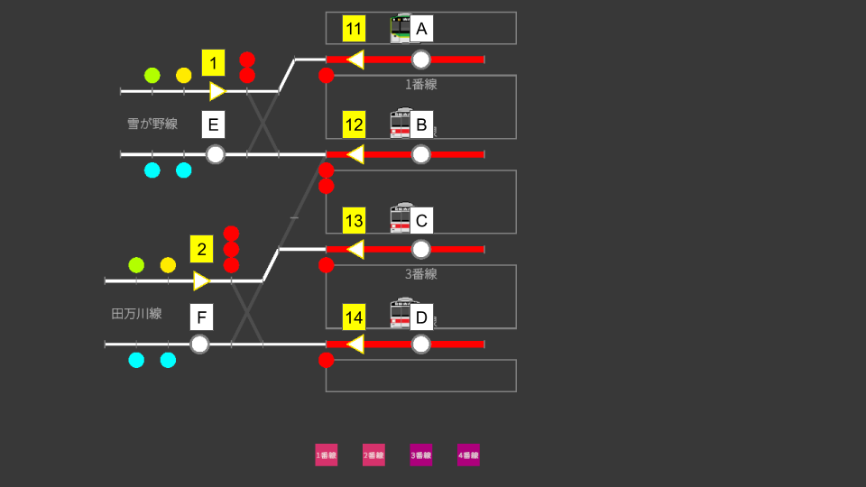

🎯 地圖概要
大田是東京神奈川急行的兩條路線發抵的頭端式終點站。 線路在月台處為盡頭式設計，所有到達的列車都會在同一月台調轉方向後折返。 沒有引上線，也不需要調車作業。相對地，兩條路線的到達與出發都集中在車站入口（同一組轉轍器群）， 如何俐落地處理交錯的進路正是考驗身手之處。
- 股道：1〜4 股道（頭端式・島式 2 面 4 線）
- 雪が野線 … 1 股道 / 2 股道
- 田万川線 … 3 股道 / 4 股道
- 引上線：無（折返全部在月台上進行）
- 列車：所有列車均為各站停車・3 節編組。沒有車種或編組長度的變化
🗺 控制桿配置圖

請透過上圖確認站內控制桿（起點・終點）與股道的位置關係。
🔧 進路一覽
進路由起點控制桿與終點控制桿的組合構成。 大田的進路全部為正線進路，分為到達用與出發用兩組。 沒有調車進路。
到達進路（站外 → 股道）
起點控制桿「1」對應來自雪が野線的到達，「2」對應來自田万川線的到達。
| 進路名稱 | 起點 → 終點 | 用途 |
|---|---|---|
| 1A | 1 → A | 從雪が野線進入 1 股道的進路 |
| 1B | 1 → B | 從雪が野線進入 2 股道的進路 |
| 2B | 2 → B | 從田万川線進入 2 股道的進路（跨路線的渡線） |
| 2C | 2 → C | 從田万川線進入 3 股道的進路 |
| 2D | 2 → D | 從田万川線進入 4 股道的進路 |
出發進路（股道 → 站外）
起點控制桿「11〜14」對應各股道的出發。終點「E」為雪が野線方向，「F」為田万川線方向。
| 進路名稱 | 起點 → 終點 | 用途 |
|---|---|---|
| 11E | 11 → E | 從 1 股道出發至雪が野線的進路 |
| 12E | 12 → E | 從 2 股道出發至雪が野線的進路 |
| 12F | 12 → F | 從 2 股道出發至田万川線的進路（跨路線的渡線） |
| 13F | 13 → F | 從 3 股道出發至田万川線的進路 |
| 14F | 14 → F | 從 4 股道出發至田万川線的進路 |
🔄 月台折返的流程
在頭端式的大田，所有列車都按照「到達 → 在月台上直接調轉方向 → 出發」的流程運行。 由於沒有往引上線的調車作業，操作相當簡單，每班列車只需以下 3 個步驟。
-
排列到達進路
根據接近列車所屬的路線（雪が野線為起點控制桿「1」，田万川線為「2」）， 操作發車看板指定股道的終點控制桿，開通到達進路。
-
排列出發進路
到達的列車在辦理乘降作業的同時，直接成為折返列車。 折返後的車次是在到達時的車次後面加上「_1」（例：2003 → 2003_1）。 請在發車看板上確認折返後的方向，並以該股道的起點控制桿（11〜14）與對應方向的終點控制桿（E 或 F）開通出發進路。
-
按下發車按鈕
到了發車時刻後，按下該股道的發車按鈕讓列車發車。
在早尖峰劇本中，會接連出現到達後僅約 3 分鐘便折返發車的列車。 排列到達進路時，先在發車看板上確認「下一班往哪個方向、幾點幾分出發」，就能從容應對。
🔀 活用 2 股道（跨路線運用）
2 股道是與兩條路線皆相連的共用股道。大多數列車只是「折返回原來的路線」， 但早尖峰時存在從雪が野線到達、往田万川線出發的跨路線運用。
| 到達時 | 到達進路 | 出發時 | 出發進路 |
|---|---|---|---|
| 2003（從雪が野線到達 2 股道） | 1B | 2003_1（從 2 股道往田万川線） | 12F |
請仔細確認發車看板的方向顯示，切勿憑主觀印象排列「12E（往雪が野線）」。 另外，進路 12F 會斜向橫越車站入口的轉轍器群，因此與許多其他進路互相衝突。等周邊的到達・出發告一段落後再開通，會更加順暢。
⚠ 常見錯誤・注意事項
① 忘記排列出發進路
到達的列車不會自動折返。必須同時完成出發進路的開通與按下發車按鈕，列車才能發車。 若忙於處理到達而忘記出發側，月台轉眼間就會被佔滿。
② 弄錯 2 股道的出發方向
從 2 股道可往雪が野線（12E）與田万川線（12F）兩個方向出發。 請先確認發車看板的方向顯示，再排列進路。
③ 車站入口的進路衝突
兩條路線的到達・出發全部集中在車站入口的轉轍器群。 互相衝突的進路無法同時開通，因此有時需要等待先排列的進路解除鎖閉。 優先處理即將發車列車的進路，並讓到達列車在站外稍作等待，也是有效的判斷。